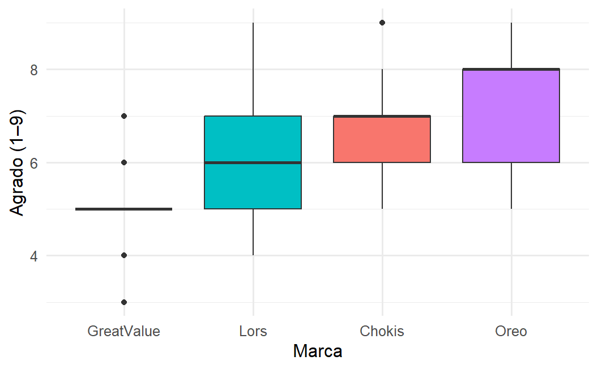
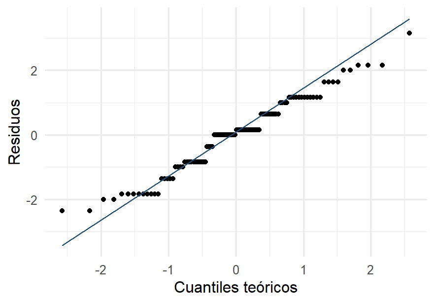
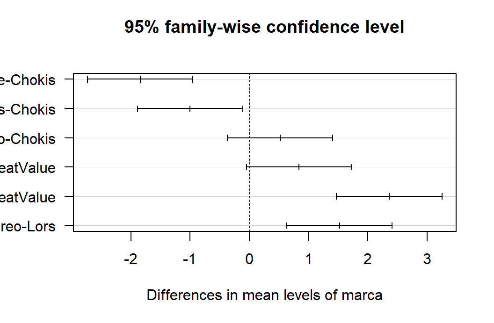

1 - 0.95^6 # probabilidad de al menos un falso positivo en 6 pruebas
#> [1] 0.264908111 Análisis de varianza (ANOVA)
AdvertenciaCapítulo en revisión
El contenido de este capítulo está completo, pero todavía no pasa por la revisión final de redacción. Se avisará en clase cuando quede listo para estudiar de aquí. Mientras tanto se puede consultar, con esa advertencia.
TipObjetivos del capítulo
- Explicar por qué no se deben hacer muchas pruebas t para comparar varios grupos.
- Entender el ANOVA como una comparación entre variación entre grupos y dentro de grupos.
- Aplicar la prueba F y verificar sus supuestos.
- Identificar entre cuáles grupos está la diferencia con pruebas post-hoc.
Llegamos al capítulo del proyecto. Ya sabemos comparar dos grupos (Capítulo 9); ahora son tres o más: cuatro marcas de galletas, cuatro sustratos de cultivo, tres terapias. La técnica se llama análisis de varianza, y su nombre es curioso: usa varianzas para comparar medias.
11.1 Por qué no muchas pruebas t
La tentación es obvia: si tengo cuatro marcas, hago todas las comparaciones de a dos. Con cuatro grupos son seis pruebas. El problema es el de las comparaciones múltiples que ya vimos en el Capítulo 8: cada prueba tiene 5 % de probabilidad de dar un falso positivo, y esas probabilidades se acumulan.
Es decir, más del 26 % de probabilidad de “descubrir” al menos una diferencia inexistente. Con diez grupos serían 45 pruebas y la probabilidad superaría el 90 %. El ANOVA resuelve esto con una sola prueba global que mantiene el error en 5 %.
11.2 La idea: dos fuentes de variación
Miremos primero los datos del experimento de la cata:
ggplot(galletas, aes(x = reorder(marca, agrado), y = agrado, fill = marca)) +
geom_boxplot() +
labs(x = "Marca", y = "Agrado (1–9)") +
theme(legend.position = "none")
Las medias por marca difieren, pero dentro de cada marca también hay dispersión. No todos los jueces coinciden. La pregunta del ANOVA es exactamente esa comparación:
¿La variación entre las medias de los grupos es grande comparada con la variación dentro de los grupos?
Si las medias están muy separadas respecto al ruido interno, concluimos que los grupos difieren de verdad. Si la separación es del mismo orden que el ruido, no.
Formalmente se descompone la variación total en dos partes:
\[SC_{\text{total}} = \underbrace{SC_{\text{entre}}}_{\text{efecto del factor}} + \underbrace{SC_{\text{dentro}}}_{\text{ruido}}\]
y el estadístico es su cociente, ajustado por grados de libertad:
\[F = \frac{SC_{\text{entre}} / (k-1)}{SC_{\text{dentro}} / (N-k)} = \frac{\text{variación entre grupos}}{\text{variación dentro de grupos}}\]
Bajo \(H_0\) (todas las medias iguales), \(F\) ronda 1. Valores grandes son evidencia contra \(H_0\).
11.2.1 Laboratorio: entre grupos contra dentro de grupos
Aquí se ve el corazón del ANOVA. Al mover la separación entre las medias y la dispersión dentro de cada grupo se observa cómo responde \(F\). Se descubrirá que lo que importa no es la separación en sí, sino la separación relativa al ruido.
NotaInterpretación
Con la separación en 0: las tres rayas rojas (las medias) quedan casi sobre la línea gris (la media global), \(F\) ronda 1 y el resultado casi nunca es significativo. Es el comportamiento esperado cuando \(H_0\) es cierta.
Si se deja la separación en 1.5 y se sube el ruido de 0.3 a 3: las medias siguen igual de separadas, pero \(F\) se desploma. La misma diferencia real se vuelve indetectable cuando los grupos son muy dispersos. Y al revés: con poco ruido, una separación pequeña basta.
Por último, al subir el n por grupo manteniendo todo lo demás: \(F\) crece. Más datos, más capacidad de detectar la misma diferencia.
Ese cociente (señal contra ruido) es todo el ANOVA.
11.3 El ANOVA en R
Volvamos a las galletas. Las hipótesis son:
- \(H_0: \mu_{\text{Oreo}} = \mu_{\text{Chokis}} = \mu_{\text{Lors}} = \mu_{\text{GreatValue}}\)
- \(H_1\): al menos una media difiere de las demás
modelo <- aov(agrado ~ marca, data = galletas)
summary(modelo)
#> Df Sum Sq Mean Sq F value Pr(>F)
#> marca 3 82.76 27.587 19.12 8.38e-10 ***
#> Residuals 96 138.48 1.443
#> ---
#> Signif. codes: 0 '***' 0.001 '**' 0.01 '*' 0.05 '.' 0.1 ' ' 1
NotaInterpretación
La tabla de ANOVA se lee así: el renglón marca es la variación entre grupos (3 grados de libertad, uno menos que el número de marcas) y Residuals es la variación dentro (96 grados de libertad). El cociente de sus cuadrados medios da \(F \approx 19.1\), con un valor p del orden de \(10^{-10}\).
Conclusión: rechazamos \(H_0\), las marcas no gustan por igual. Pero ojo con lo que no sabemos todavía: el ANOVA dice que hay diferencias, no entre cuáles. Para eso hacen falta las pruebas post-hoc.
11.3.1 El mismo cálculo a mano
Un ANOVA completo con nueve datos cabe en media hoja, y hacerlo una vez muestra de dónde sale la tabla que imprime R. Tres tratamientos con tres observaciones cada uno:
| Grupo | Datos | Media |
|---|---|---|
| A | 7, 8, 9 | 8 |
| B | 5, 6, 7 | 6 |
| C | 3, 4, 5 | 4 |
La media general de los nueve datos es \(\bar{x} = 6\).
Paso 1. Variación entre grupos. Cuánto se apartan las medias de grupo de la media general, ponderando por el tamaño de cada grupo:
\[SC_{\text{entre}} = \sum n_i(\bar{x}_i - \bar{x})^2 = 3(8-6)^2 + 3(6-6)^2 + 3(4-6)^2 = 12 + 0 + 12 = 24\]
con \(k - 1 = 2\) grados de libertad.
Paso 2. Variación dentro de grupos. Cuánto se apartan los datos de la media de su propio grupo:
\[SC_{\text{dentro}} = \underbrace{(7-8)^2 + (8-8)^2 + (9-8)^2}_{2} + \underbrace{2}_{\text{grupo B}} + \underbrace{2}_{\text{grupo C}} = 6\]
con \(N - k = 9 - 3 = 6\) grados de libertad.
Paso 3. Los cuadrados medios, que son las sumas divididas entre sus grados de libertad:
\[CM_{\text{entre}} = \frac{24}{2} = 12, \qquad CM_{\text{dentro}} = \frac{6}{6} = 1\]
Paso 4. El estadístico F, su cociente:
\[F = \frac{CM_{\text{entre}}}{CM_{\text{dentro}}} = \frac{12}{1} = 12\]
Paso 5. La decisión. El valor crítico \(F_{0.95}(2, 6)\) es 5.14. Como \(12 > 5.14\), se rechaza la igualdad de medias.
La tabla de ANOVA reúne todo lo anterior:
| Fuente | SC | gl | CM | F |
|---|---|---|---|---|
| Entre grupos | 24 | 2 | 12 | 12 |
| Dentro de grupos | 6 | 6 | 1 | |
| Total | 30 | 8 |
datos <- data.frame(
y = c(7, 8, 9, 5, 6, 7, 3, 4, 5),
g = rep(c("A", "B", "C"), each = 3)
)
summary(aov(y ~ g, data = datos))
#> Df Sum Sq Mean Sq F value Pr(>F)
#> g 2 24 12 12 0.008 **
#> Residuals 6 6 1
#> ---
#> Signif. codes: 0 '***' 0.001 '**' 0.01 '*' 0.05 '.' 0.1 ' ' 1
NotaInterpretación
La salida de R reproduce exactamente la tabla: 24 y 6 de sumas de cuadrados, 12 y 1 de cuadrados medios, \(F = 12\) y \(p = 0.008\).
Tres cosas que este ejemplo deja ver con claridad:
Las sumas de cuadrados se reparten. \(SC_{\text{total}} = 30 = 24 + 6\), y los grados de libertad también: \(8 = 2 + 6\). Toda la variación de los datos queda repartida entre lo que explica el factor y lo que queda como ruido. De ahí el nombre “análisis de varianza”: se analiza la varianza descomponiéndola.
El cuadrado medio dentro es la varianza común. Vale 1, que es exactamente la varianza de cada grupo por separado (los tres tienen datos consecutivos). Es la estimación del ruido de fondo contra la que se compara todo lo demás.
F es un cociente señal-ruido, igual que el estadístico \(t\): la variación explicada por el factor, medida en unidades de la variación no explicada. Un \(F\) de 12 significa que las diferencias entre grupos son doce veces mayores de lo que cabría esperar por el ruido interno.
11.4 Verificación de supuestos
Antes de creerle al resultado hay que revisar tres supuestos. Este paso no es un trámite: es lo que distingue un análisis serio de uno decorativo.
1. Independencia. Garantizada por el diseño: cada juez calificó de forma individual, sin comentarios en voz alta, y el orden se aleatorizó (Capítulo 5).
2. Normalidad de los residuos. Se revisa con un Q-Q plot de los residuos del modelo, no de los datos crudos:
residuos <- residuals(modelo)
ggplot(data.frame(r = residuos), aes(sample = r)) +
stat_qq() + stat_qq_line(color = "#1F4E79") +
labs(x = "Cuantiles teóricos", y = "Residuos")
shapiro.test(residuos)
#>
#> Shapiro-Wilk normality test
#>
#> data: residuos
#> W = 0.97228, p-value = 0.033143. Homogeneidad de varianzas. Que la dispersión sea parecida en todos los grupos:
bartlett.test(agrado ~ marca, data = galletas)
#>
#> Bartlett test of homogeneity of variances
#>
#> data: agrado by marca
#> Bartlett's K-squared = 3.3986, df = 3, p-value = 0.3341
ImportanteQué hacer si un supuesto falla
- Normalidad: con grupos de tamaño razonable el ANOVA es bastante robusto gracias al TCL. Si falla claramente, se puede transformar la variable (logaritmo, raíz) o usar la alternativa no paramétrica Kruskal-Wallis (
kruskal.test). - Homogeneidad de varianzas: si Bartlett o Levene la rechazan, se usa el ANOVA de Welch (
oneway.test(..., var.equal = FALSE)), que no la exige. - Independencia: no tiene arreglo estadístico. Si el diseño la violó (por ejemplo, si los jueces se copiaron), los datos no sirven para esta prueba. Por eso el diseño va primero.
11.5 Pruebas post-hoc: ¿entre cuáles?
Rechazar \(H_0\) deja la pregunta interesante abierta. Las pruebas post-hoc comparan todos los pares corrigiendo por comparaciones múltiples, de modo que el error global se mantenga en 5 %. La más usada es la de Tukey:
TukeyHSD(modelo)
#> Tukey multiple comparisons of means
#> 95% family-wise confidence level
#>
#> Fit: aov(formula = agrado ~ marca, data = galletas)
#>
#> $marca
#> diff lwr upr p adj
#> GreatValue-Chokis -1.84 -2.72819696 -0.951803 0.0000027
#> Lors-Chokis -1.00 -1.88819696 -0.111803 0.0208515
#> Oreo-Chokis 0.52 -0.36819696 1.408197 0.4233208
#> Lors-GreatValue 0.84 -0.04819696 1.728197 0.0707424
#> Oreo-GreatValue 2.36 1.47180304 3.248197 0.0000000
#> Oreo-Lors 1.52 0.63180304 2.408197 0.0001225plot(TukeyHSD(modelo), las = 1)
NotaInterpretación
Cada renglón es una comparación con su intervalo de confianza ajustado: si el intervalo no contiene al cero, esa pareja difiere significativamente. El resultado dibuja dos gamas:
- Oreo (7.36) y Chokis (6.84) no difieren significativamente entre sí.
- Lors (5.84) y Great Value (5.00) tampoco difieren entre sí.
- Pero cualquier marca del primer grupo supera a cualquiera del segundo.
Redacción para el reporte del proyecto: “El agrado difiere significativamente entre marcas (F(3,96) = 19.1, p < 0.001). Las comparaciones de Tukey identifican dos grupos homogéneos: Oreo y Chokis obtienen las calificaciones más altas, sin diferencia detectable entre ellas, mientras que Lors y Great Value quedan por debajo, también sin diferencia entre sí.”
Esta conclusión es mucho más útil que un simple “las marcas difieren”, y es justo lo que un cliente querría saber.
11.6 Un segundo caso: los sustratos
El mismo análisis con los datos del cultivo de setas:
modelo_h <- aov(eficiencia_biologica ~ sustrato, data = hongos)
summary(modelo_h)
#> Df Sum Sq Mean Sq F value Pr(>F)
#> sustrato 3 19566 6522 83.25 <2e-16 ***
#> Residuals 96 7521 78
#> ---
#> Signif. codes: 0 '***' 0.001 '**' 0.01 '*' 0.05 '.' 0.1 ' ' 1
bartlett.test(eficiencia_biologica ~ sustrato, data = hongos)
#>
#> Bartlett test of homogeneity of variances
#>
#> data: eficiencia_biologica by sustrato
#> Bartlett's K-squared = 3.515, df = 3, p-value = 0.3188TukeyHSD(modelo_h)$sustrato |> round(2)
#> diff lwr upr p adj
#> olote_maiz-aserrin 14.91 8.36 21.45 0.00
#> paja_trigo-aserrin 35.51 28.97 42.06 0.00
#> pulpa_cafe-aserrin 30.79 24.25 37.34 0.00
#> paja_trigo-olote_maiz 20.60 14.06 27.15 0.00
#> pulpa_cafe-olote_maiz 15.88 9.34 22.43 0.00
#> pulpa_cafe-paja_trigo -4.72 -11.27 1.83 0.24
NotaInterpretación
Aquí \(F\) es enorme y el efecto del sustrato es contundente: la paja de trigo y la pulpa de café rinden mucho más que el olote y, sobre todo, que el aserrín. Bartlett no rechaza la igualdad de varianzas, así que el supuesto se sostiene.
Un detalle honesto que vale la pena discutir en clase. El grupo del aserrín parece más variable que los demás (su desviación es la mayor). Sin embargo, Bartlett no lo detecta como significativo. Con 25 bolsas por grupo, la prueba no tiene suficiente potencia para distinguir esa diferencia de varianzas del azar. Es el mismo fenómeno del Capítulo 9: no rechazar no equivale a demostrar igualdad.
Tip¿Qué técnica usar?
Con tres o más grupos y una variable respuesta cuantitativa:
| Paso | Herramienta en R |
|---|---|
| 1. Explorar | boxplot o ggplot con geom_boxplot() |
| 2. Prueba global | aov(y ~ grupo) y summary() |
| 3. Normalidad de residuos | Q-Q plot y shapiro.test(residuals(m)) |
| 4. Homogeneidad de varianzas | bartlett.test(y ~ grupo) |
| 5. ¿Entre cuáles? | TukeyHSD(m) |
| Si fallan los supuestos | oneway.test(var.equal = FALSE) o kruskal.test |
Nunca deben hacerse múltiples pruebas t sin corrección: infla el error tipo I.
11.7 Resumen
Cuando hay tres o más grupos, comparar por pares infla el error tipo I; el ANOVA hace una sola prueba global comparando la variación entre grupos con la variación dentro de ellos, mediante el estadístico \(F\). Rechazar \(H_0\) significa que alguna media difiere, y las pruebas post-hoc (Tukey) revelan entre cuáles, corrigiendo por comparaciones múltiples. Los supuestos (independencia, normalidad de los residuos y homogeneidad de varianzas) deben verificarse siempre, y cada uno tiene su alternativa cuando falla. En el Capítulo 12 cerramos el curso volviendo a la regresión, ahora para hacerle inferencia.
11.8 Ejercicios
Comparaciones múltiples. Con 5 grupos, ¿cuántas comparaciones por pares hay? ¿Cuál es la probabilidad de al menos un falso positivo si se hacen todas a \(\alpha = 0.05\)?
Lee la tabla. En la salida de
summary(modelo)para las galletas, identificar: los grados de libertad de cada fuente, la suma de cuadrados entre grupos y el cuadrado medio residual. ¿Qué representa este último?ANOVA completo. Con
datos/hongos_sustrato.csv, analiza si los días a cosecha difieren entre sustratos. Hacer el ciclo completo: explorar, prueba global, supuestos y post-hoc.Supuestos. Verificar la normalidad de los residuos del modelo del ejercicio 3. Si fallara, ¿qué alternativa usarías?
Laboratorio. En el Sección 11.2.1, fijar la separación en 1 y el ruido en 2. ¿Es significativo? Ahora sube el n por grupo hasta que lo sea de forma consistente. ¿Qué implica esto para planear un experimento?
Del ANOVA al post-hoc. Un investigador reporta: “el ANOVA fue significativo (p = 0.003), por lo tanto el tratamiento A es mejor que el B”. ¿Qué error comete?
Conecta con el proyecto. Con los datos de la cata, ¿por qué fue importante aleatorizar el orden en que cada juez probó las marcas? Relacionar la respuesta con el supuesto que podría haberse violado.
TipSoluciones y retroalimentación
1. Con 5 grupos hay \(\binom{5}{2} = 10\) comparaciones. La probabilidad de al menos un falso positivo es \(1 - 0.95^{10} \approx 0.40\), es decir 40 %. Con 10 grupos serían 45 comparaciones y la probabilidad superaría el 90 %: prácticamente garantizado encontrar algo “significativo” aunque no exista nada. Este es el argumento central para usar ANOVA.
2. Grados de libertad: 3 para marca (número de grupos menos uno) y 96 para Residuals (\(N - k = 100 - 4\)). La suma de cuadrados entre grupos es aproximadamente 82.8. El cuadrado medio residual (≈ 1.44) es la estimación de la varianza dentro de los grupos, es decir, del ruido: cuánto varían las calificaciones entre jueces que probaron la misma marca. Su raíz cuadrada, ≈ 1.2 puntos, es la desviación estándar típica dentro de cada marca, y sirve para juzgar si una diferencia de medias es grande en términos prácticos.
3. El ciclo es: ggplot(...) + geom_boxplot(), luego m <- aov(dias_cosecha ~ sustrato, hongos); summary(m), después shapiro.test(residuals(m)) y bartlett.test(dias_cosecha ~ sustrato, hongos), y finalmente TukeyHSD(m). El resultado es contundente: los días a cosecha difieren entre sustratos, siendo la paja de trigo el más rápido (unos 21 días) y el aserrín el más lento (unos 30). Nótese que aquí “mejor” significa menos días: siempre hay que traducir la dirección del efecto al lenguaje del problema.
4. Los residuos deberían seguir razonablemente la recta del Q-Q plot. Si la normalidad fallara claramente, las alternativas son: transformar la variable (logaritmo si hay sesgo a la derecha), usar el ANOVA de Welch si el problema real son las varianzas, o recurrir a Kruskal-Wallis (kruskal.test), que es la versión no paramétrica y compara medianas basándose en rangos. Con 25 observaciones por grupo, el ANOVA es bastante robusto ante desviaciones moderadas de la normalidad, gracias al TCL.
5. Con separación 1 y ruido 2, con \(n = 5\) o 15 el resultado casi nunca es significativo; hacia \(n = 30\) o 40 empieza a serlo de manera consistente. Implicación para el diseño: el tamaño de muestra debe planearse antes, en función de qué tan grande es el efecto que se quiere detectar y de cuánto ruido hay. Un experimento con muestra insuficiente puede no detectar un efecto que sí existe (error tipo II), y desperdicia el trabajo de campo. Esto se llama cálculo de potencia y en R se hace con power.anova.test().
6. El error es saltar del resultado global a una conclusión particular. El ANOVA solo dice que alguna media difiere; puede que la diferencia real esté entre C y D, y que A y B sean indistinguibles. Para afirmar algo sobre la pareja A–B hace falta una prueba post-hoc que además corrija por comparaciones múltiples. Es exactamente lo que pasó con las galletas: el ANOVA salió significativo, pero Tukey mostró que Oreo y Chokis no difieren entre sí.
7. Aleatorizar el orden protege el supuesto de que las diferencias observadas se deban solo a la marca. Si todos hubieran catado en el mismo orden, el efecto de fatiga de paladar habría castigado siempre a la última marca, quedando confundido con el efecto de la marca: sería imposible saber si Great Value salió mal por su sabor o por probarse al final. En términos del modelo, la aleatorización convierte esa fuente de variación sistemática en ruido aleatorio, que el ANOVA absorbe en los residuos en lugar de atribuirlo erróneamente al factor.